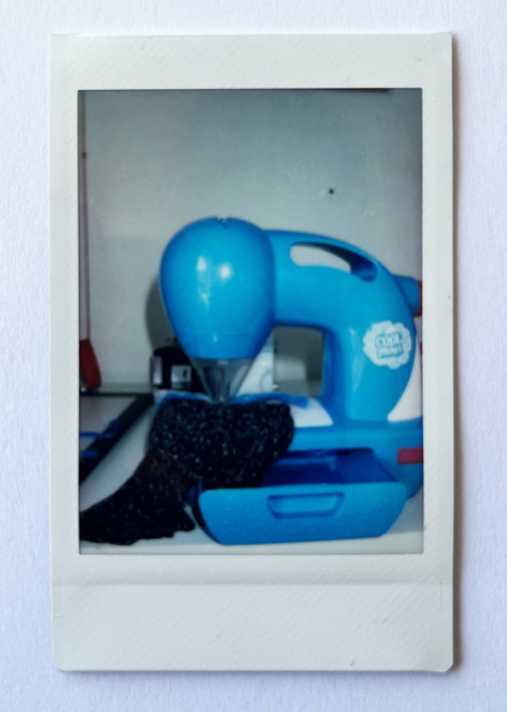

Info
Hvem er vi?
Instant Ugen er et lille projekt, der drives af et par undervisere fra Multimediedesignuddannelsen på EK — Erhvervsakademi København.
Instant Ugen er et halvårligt projekt, hvor undervisere og studerende samarbejder om et digitalt design- og kommunikationsprojekt relateret til Instant Ugen-konkurrencen — den hjemmeside, du kigger på lige nu. I bund og grund ønsker vi bare at promovere instant fotografering og have det sjovt, mens vi gør det :-)

Dommerne
Bidrag bliver gennemgået af
Jonas Hasle
Adjunkt, Multimediedesign
Anders Dollerup
Lektor, Multimediedesign
Birgitte Heide
Lektor, Multimediedesign
Stefan Grage
Lektor, Multimediedesign
Digital Design
Studerende på valgfaget
Sponsorer
Ikke sponsoreret af branchen
Instant Ugen er ikke relateret til nogen virksomheder inden for instant foto-branchen.
EK — Erhvervsakademi København er den eneste organisation, der støtter os. I hvert fald indtil videre ;-)